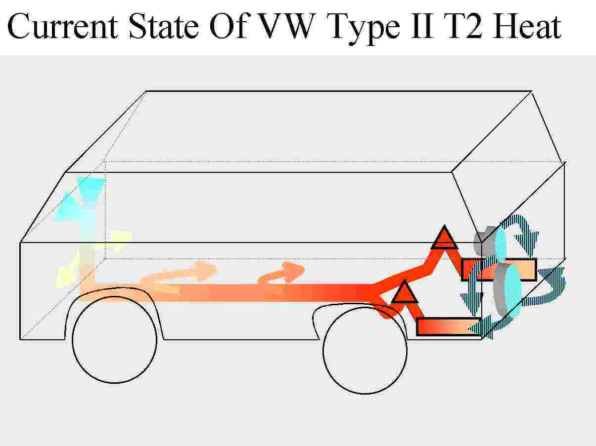
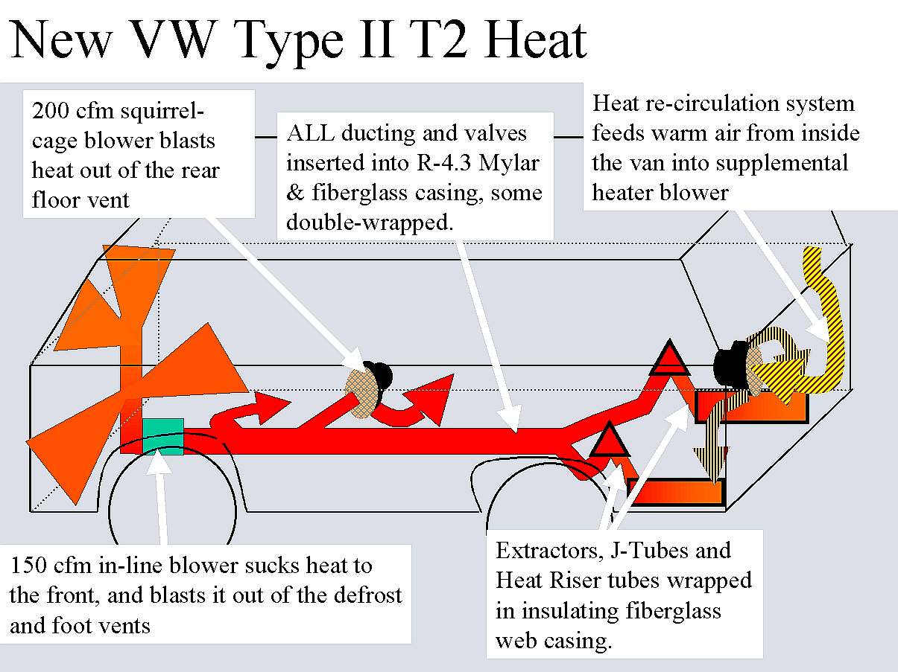
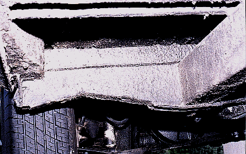

Heat, Glorious Heat for your 1960-1983 VW Bus

Initial Discussion
Let's get to it... VW bus heat is not a bad design. It is just poorly executed. Later model years (1976-1983.5) can literally heat you out of the van in a few minutes! If we remedy certain problems with Bus heat, it works great. Beyond the long-term service we needed, the big motivation for this fix was our planned 9,000 mile honeymoon across the USA (Oct-Dec 1997) I knew it would be COLD. It was. We weren't.
Loading below is a big diagram of your heating system, and the way we fixed it. While it loads, lets look at the problems with the VW heating system (starting from the rear, where the heat starts, and moving forward):

Graphic and Description
Look at this:

What you see here is your van. The bluish discs in the rear represent your engine fan, and supplemental blower. They input cold air into the rectangles, (your heat exchangers), where it gets very hot in a hurry. From there it moves forward, loosing heat and velocity as it goes.
If you have ever felt the air coming directly out of a stock, new heat exchanger, even when it is icy out, you know what inspired our improvements. I have not measured the temperature, but after a short trip down the highway, the air coming out is hot enough to burn your hand. I would guess somewhere around 140-160 degrees.
As soon as this very hot air leaves the heat exchanger, it flows through:
and finally, what was left of your heat, barely meanders out of the ducts, creating the vague scent of heat, but little substantive warmth

Here is what we envisioned and created:

If you didn't believe me before that I am not a guru-web-designer, those graphics would convince you...don't know what to do about that... anyway, I eliminated the engine fan for clarity on the drawing. The engine fan is still on the van, and functions as before.
There's the conceptual. Now how'd we do that? Right?

Getting started, Undercoating
It's actually pretty simple, just time consuming.
First we removed everything that had to do with heat on the van, including the BIG valve in the middle of the van that looks like a rocket ship, and all of the paper-tube ducting. We left the front (vertical) tube in, and the cables, except for one, which we replaced.
We bought new flapper valves, riser tubes, exchangers, and a Diet Coke, because I was doing all of this work in July and August. It was really hot out. While all of this stuff was out from under the van, and since I had the front pan off, I took the opportunity to undercoat the entire van twice with Kool Patch.
I think it took me about 15 seconds to write the words "I took the opportunity to undercoat the entire van twice with Kool Patch". It took however, an eternity to undercoat that van. You will recall the consistency of Kool Patch is roughly that of Chocolate Pudding with fiberglass threads in it, just like Gramma used to make. Imagine for a moment the Sisyphusian task of spreading chocolate pudding across an irregular surface interrupted by projecting and overhanging immovable obstacles, while laying on your back on hot asphalt in July in Northern Virginia.
This was a task fit for penitents and felons. In the evening I would sip cool refreshment, look down at the bus from the balcony, and contemplate ways I could safely roll the bus over, undercoat it, and roll it back. In the end, I laid on my back for a week or two after work.
While not showing much else, here is the visual result of two layers of Kool Patch, one year after it was applied. Nuf said.
We wire-brushed and repainted the valves with Rustoleum. We wrapped them in NASA insulation, carefully cutting away the insulation where the cables attached. Last of all we created a cocoon of duct-tape around each, to seal out moisture.
Not to repeat myself…
Those of you who are frequent visitor to this little site know that this page has remained stagnant for a while. To put in more information QUICKLY, I have pasted below the contents of an e-mail to someone who asked for more details. If I repeat stuff above, sorry. I just don't have as much time as I used to, but I want you and your family to be warm in your VW!!! Also, my apologies for few pictures. I will try to scan a few of this stuff and post in the coming weeks. Now here's the message I sent…
A couple of years ago, my wife and I poured a heap of $$$ into a 1976 van to preserve and improve it. The least expensive aspect of the project was making the stock heater WORK. When we were done, we were able to comfortably sit in shirt sleeves in the van when it was 0 F degrees outside. In our 1982, the heat coming out of the front ducts is now so hot, you cannot hold your hand over it from more than a second or two. This, without adding expensive or complicated furnaces, electric heaters, etc. I have cc:d the type 2 list with this note, although I am not currently on that list.
I built a website that chronicles to whole project http://www.bulley-hewlett.com/VWindex . Since some of the early parts of the project contributed to our heater’s performance (like fully insulating the body), I would recommend at least scanning the pages from start to finish, so you get the baseline info you need. You don’t need to do all the stuff to drastically improve your heater’s performance. The "heat" portion of the site is only partially complete, but I will fill in some details below. There is a graphic (on the heat page) that shows all the components of the stock system. And the changes we made. The text below relates to that graphic.
What's wrong with my heat???
First, here are the things that can prohibit the stock, VW air-cooled heat from effectively heating your van (starting from the source, to the vents (**items require modification):
1. **Failure in design to recycle heated air from inside cabin (all air pulled into heater is ambient, COLD air)
2. (some models) Lack of blower (auxiliary blower) to push air through heater boxes.The stock cooling fan IS NOT ENOUGH for the 1960-1979 bus. Only in 1976 did VW add an electric pusher fan, and in 1980 added (the best idea) a belt-driven fan.
3. Leaks in ducting leading to heater boxes.
4. Leaks in heater boxes.
5. Leaky seams around heat riser tubes (run from boxes to heat valves ‘flapper boxes’).
6. **un-insulated heat riser tubes
7. Un-adjusted, leaky, or non-functional flapper box valves.
>>>>>>>>>>>>>>>>>>>>>>>>>>>>>>>>>>>>>>>>>>>>>>>>>>>>>>>
Now up to that point, if you have one, or many of these problems, you don’t actually have a complete heater. That is, you aren’t actually capturing the enormous amount of heat available from your exhaust system. Now here’s the rest of the list:
>>>>>>>>>>>>>>>>>>>>>>>>>>>>>>>>>>>>>>>>>>>>>>>>>>>>>>>
8. un-insulated heater duct mufflers (those black plastic accordion looking things).
9. Leaky junctions in main pipe
10. Leaks or tears in main pipe
11. un-insulated main pipe
12. **front auxiliary fan to suck heat forward
13. **un-insulated van, which allows ALL heat to leak directly back to the atmosphere without impediment.
Some of the above call for complicated efforts. Some are quite inexpensive and easy to accomplish. In the near future, our site will go into great depth on ALL of the above with photos and diagrams just like on the rest of our site. For now, here is a "quick hit" all air cooled folks can enjoy, with nominal expense/effort. The stuff with **two asterisks takes a little more time and effort, and should wait until after you have tried the cheap and easy stuff in your environment. Unless you live in Saskatchewan, the cheap stuff will prolly do the trick.
The greatest impact you can have on your 1976-1983.5 VW bus without heroic expense and effort, is adjusting the flappers, and insulating the ducting. It will cost about $19, and will take about 5-6 hours. Assuming that your heater boxes/flappers are in good shape, this project will DRAMATICALLY increase the heat in your van. Fair enough? Good.
Objectives
What we are going to do: Adjust the flappers, insulate the entire ducting system, from the heat noise mufflers to the front of the van. For those of you who aren’t Dennis, I am writing the instructions for a 1980 Vanagon. Any type 2 van would be nearly identical, except the routing of the hose over the fuel tank.
What items do I need to fix it???
Here’s what you need.
1. A 25’ box of 4" Inside Diameter R-4.3 or R-6 (if you can get it) insulated Mylar®-cased flexible household ducting. (you can get this at an HVAC specialist. Home Deep-ho won’t have the 4" ID, only 6". Remember, you want 4"!!!
2. A dozen 20" cable ties.
3. Jack stands
4. A partner (for about 10 minutes)
5. Scissors, wire cutters, goggles, a straight-blade screw driver, a pair of pliers, and a 6mm open end/ring wrench
What do I do to fix it???
(these instructions written for a Vanagon) Jack up the van. Disconnect the battery. Get all your tools under the van. Put on your goggles. Scoot under the van, and locate both flappers.
On the dashboard, have your partner fully open and fully close the heater control lever in a continual oscillation so you can inspect the flappers. On either side of, and just above the transmission, look for a thin cable, connected to a short (2") control arm by a spring and barrel bolt arrangement. The control arm should be moving forward and aft, with the motion of the cable as your partner opens and closes the valves.
You want to make sure they FULLY OPEN when the cable is under tension, and the control arm is FORWARD. You can be sure they are fully open if, when your partner has the lever in the fully open (HOT) position, you see the spring on the end of the cable compress against the control arm. Alternatively, when the cable is under tension, make sure there is no more than 1mm-2mm additional movement the control arm ‘could’ make, if the cable were tighter. I have never seen a bus where these are properly adjusted, unless the owner has recently done it.
If the control arm isn’t opening the flappers enough, you aren’t getting all the heat available. Using the 6mm wrench, release the barrel bolts, and adjust the cables so that when the dash lever is in the fully open position, the flapper valves are fully open. Done? Great.
Let's insulate the ducting!
Next, let’s insulate the ducting. Leave the van on jack stands. We will start at the front.
Remove the spare tire from its carrier, and remove the front grill. Behind the grill, release the clamp holding the top of the duct to the plastic fitting that leads inside the van. Release or cut the cable ties that hold the duct against the body, and pull the duct gently down into the area where the spare tire would normally lie. We will insulate from the front edge of the fuel tank, to the fitting going into the dash. We won’t insulate the duct going over the fuel tank, as it would be too tight of a squeeze, and would probably cause rusting by holding moisture against the top of the tank when it rains…
Open the box of Mylar® ducting, and measure out the same length PLUS 8" as the ducting under the van, from the tank, to the fitting…remember, ADD 8". Cut the ducting with scissors, and wire cutters. You will notice that this ducting has four (or three, depending on manufacturer) layers:
LAYER 1: an inside tube of wire-reinforced Mylar,
LAYER 2: a thick bat of Fiberglas insulation surrounding,
LAYER 3: a mesh of reinforcing cords, some manufacturers don’t use the reinforcing mesh. It doesn’t matter for our use. And
LAYER 4: a sturdy outside casing of thick Mylar.
This ducting will fit PERFECTLY over your existing paper ducting. Slide the entire group (all four layers) of new ducting over the old ducting. Now comes the IMPORTANT part. You MUST seal the new ducting so that water can’t seep in, and get to the fiberglass. At the fuel tank end, trim Layers 1, 2, and 3 back to about 1" from the place where you will stop insulating (probably just about over the front axle). This should leave about 3" of layer 4 to seal against the original paper ducting. Neatly gather layer 4 so that all of the extra Mylar is at the bottom of the duct. Using your cable ties, secure layer four against the dusting, and trim off any excess Mylar.
On the other end of the duct, perform virtually the same sealing procedure, trimming back the inside layer, leaving the outside protective layer. But you can use the existing screw clamp to seal the ducting as it passes into the body. Make sure you can feel fiberglass batting evenly around the entire length of the duct, that there are no "bunches" and no bare spots. Adjust the insulation as needed. Replace any cable ties that held the ducting. The outside protective ducting should be smooth, not wrinkly and slack, but not TIGHT. Tah-dah! That was easy, huh?
Follow the same procedure for the main duct, running from the junction box (just in front of the transmission) to the rear of the fuel tank. Use cable ties to seal the tank end, and the existing screw clamp at the rear. Make sure you re-hang the duct securely with a couple cable ties.
The procedure is a little different for the black plastic heat noise mufflers. Remove the mufflers completely by releasing the screw clamps, and gently pushing the mufflers off the junction box, and the flappers. Make sure you include the silicone rubber seals with the mufflers.
Again, cut ducting +8". This time, remove the inside tube (LAYER 1) completely from the new ducting, leaving only the fiberglass batting, the mesh, and the outside Mylar. Slide these three layers over the mufflers, and neatly gather the Mylar to pass UNDER the screw clamps that hold the mufflers to the flappers/junction box. Make sure the clamps are still loose enough to allow you to fit the mufflers. Trim off the extra Mylar. I’m no dope smoker, but if you do this right, the results will look like a couple of big, fat joints.
Re-install the mufflers back on the van, and tighten the clamps. Tah-Dah!!!!! That’s it. You have just insulated most of your ducting. Unless, you want to get REALLY gung-ho, and insulate the junction box, which helps a lot, that is it. Take the van off the jack stands, take of your goggles, and hook the battery back up.
Now here is the fun. Start the van, and go for a spin with the heat on. Did you have to open a window? Next, WITH CAUTION, slide up under the van, and feel the difference in temperature between the outside of the insulated ducting, and the un-insulated portions (over the fuel tank, or at the junction box). Amazing, huh? All the heat going to waste.
Don’t throw that extra ducting away, as you will need some of it for the next "phase" of this project, recirculating the heat…that is another day though….
If I can answer any questions, or if you have success stories you want to share, please e-mail me.
VWHEAT@bulley-hewlett.com
Engine Out, Then Back In | Interior Out, Noise Proofing | Home

Could our business help yours? Find out how, here: http://www.bulley-hewlett.com/
Write us at: mailto:gmbulley@bulley-hewlett.com